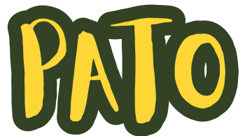
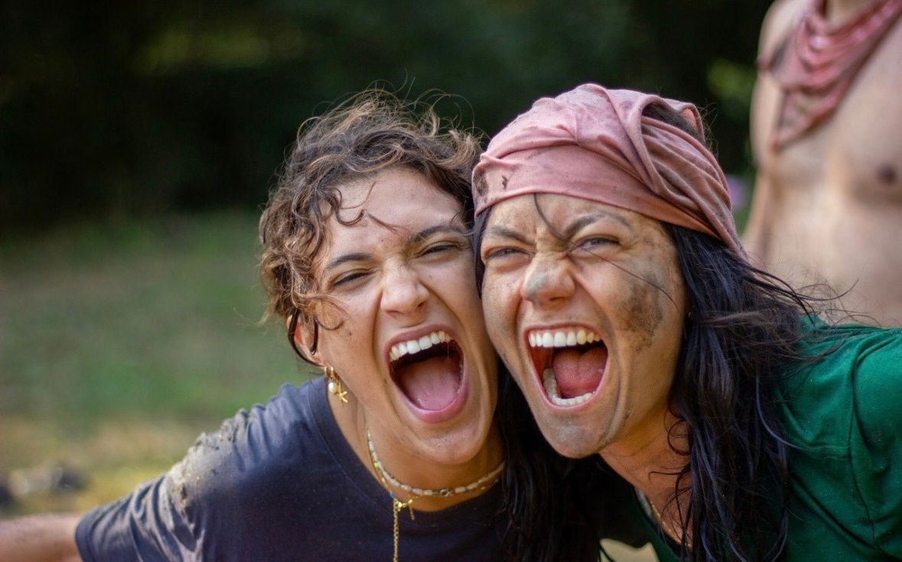
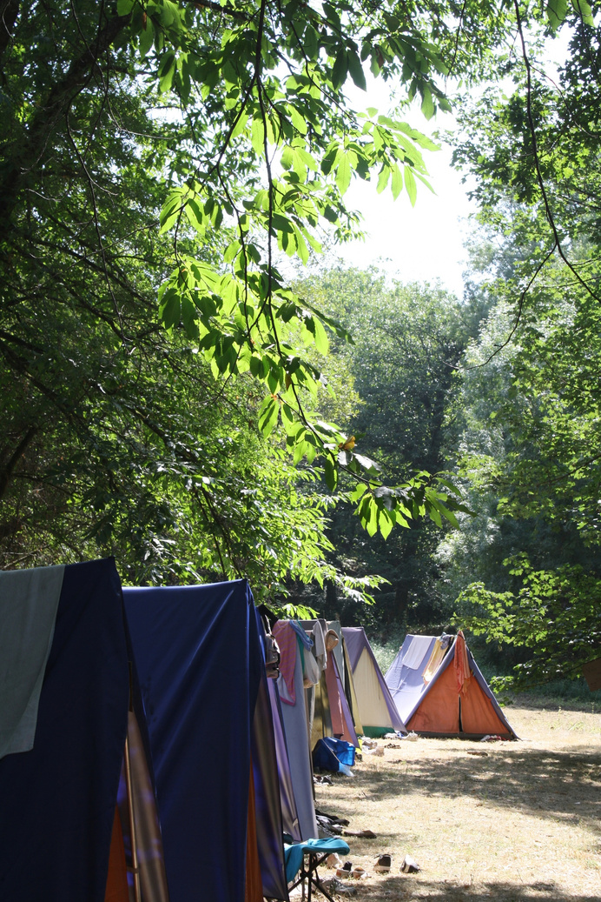
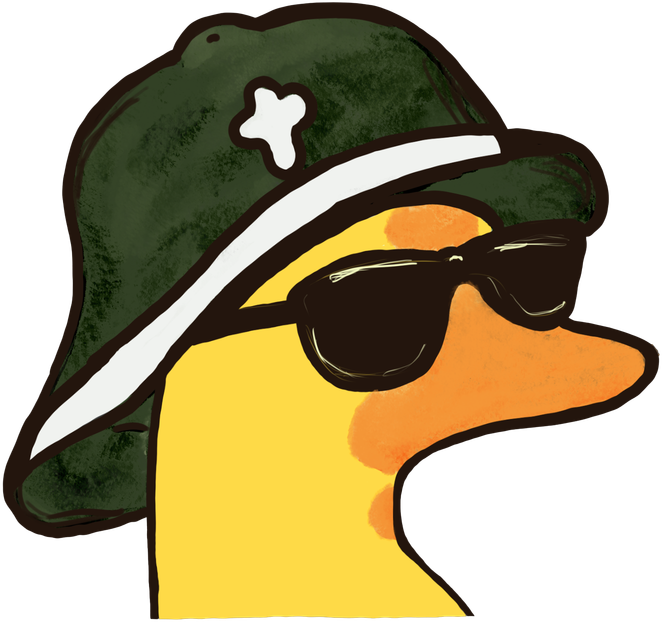
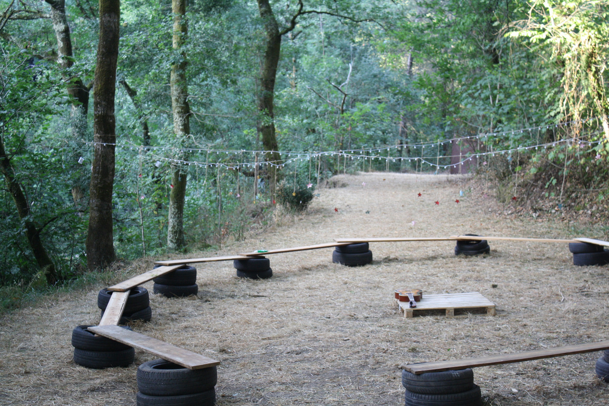
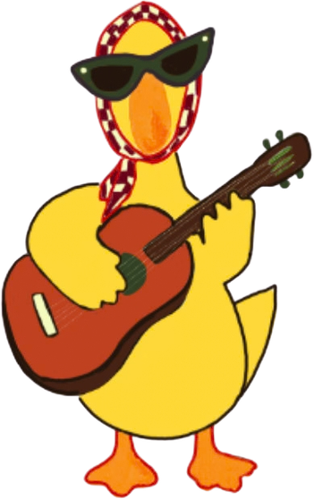
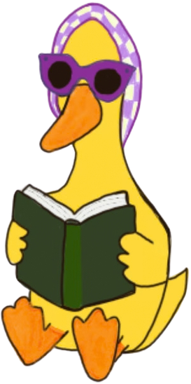
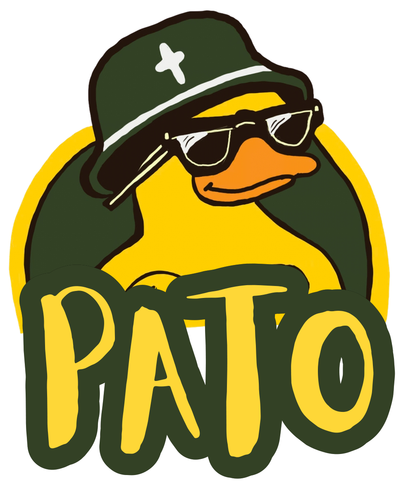

FÉ QUE SE VIVE.
Oração, partilha e tempo para parar. No meio da natureza e da vida em grupo, abrimos espaço para o encontro com Deus.
de coração aberto.
Vem para o bandoCampo de férias católico · Universitários
Desliga da rotina. Liga-te ao que importa.
Fé, amigos e aventura — tudo no mesmo campo.



01 / O espírito do campo
O PATO nasce de um grupo de amigos e de uma vontade simples: viver um verão com mais sentido.
Um campo de férias católico para universitários, onde a aventura se cruza com a fé e onde há espaço para seres tu. Para rir alto, fazer perguntas e descobrir Deus nas pequenas coisas.
Oração, partilha e tempo para parar. No meio da natureza e da vida em grupo, abrimos espaço para o encontro com Deus.
de coração aberto.Refeições demoradas, conversas que ficam e gargalhadas sem motivo. Chegas com a tua mochila. Levas muito mais.
o bando está à tua espera.Jogos, caminhadas e desafios em equipa. Trocamos os ecrãs por dias ao ar livre e histórias para contar no regresso.
sapatilhas sujas, boa vida.02 / A vida no PATO
Há tempo para tudo.
Até para perder a noção dele.


FORA DA ROTINA, POR INTEIRO.Ar fresco, pequeno-almoço em grupo e um dia inteiro à nossa frente.
Um momento de oração para dar sentido ao dia.
Caminhadas, jogos e desafios para descobrir em equipa.
O almoço sabe melhor quando se faz e partilha em conjunto.
Um convite a sair do costume, conhecer o bando e experimentar coisas novas.
Grandes jogos, espírito de equipa e alguma competição saudável.
Atividades criativas e oportunidades para servir o grupo.
Tempo livre para descansar, conversar e conhecer quem está ao lado.
Quando o dia abranda, ainda há tanto para partilhar.
Juntamos o grupo e as histórias que o dia nos trouxe.
Serões com música, jogos e aquelas figuras que ninguém esquece.
Oração e silêncio. Um encontro com Deus antes de descansar.
TRAZ QUEM ÉS.
O RESTO VIVE-SE CÁ.
03 / Antes de fazer a mochila
É normal. As grandes aventuras
também começam com perguntas.

Para estudantes universitários com vontade de viver dias diferentes, conhecer pessoas e aprofundar a fé. Basta trazeres disponibilidade para a vida em grupo, curiosidade e vontade de participar.
Podes vir com amigos ou chegar sem conhecer ninguém. Conhecer pessoas faz parte da experiência — desde o primeiro dia, há lugar para ti no bando.
O PATO é um campo católico e a oração, a celebração e a partilha de fé fazem parte do dia. Não precisas de ter todas as respostas: vem com abertura para participar e respeitar esta proposta.
Estamos a preparar a próxima edição. As datas, o local e o valor da inscrição serão anunciados em breve. Segue o PATO no Instagram ou fala connosco para ficares a par.
Ver os contactos do PATORoupa confortável, sapatilhas para caminhar, uma garrafa de água e vontade de entrar no espírito. Antes do campo, partilhamos uma lista completa com tudo o que vais precisar.
As inscrições ainda não abriram. Vamos partilhar todas as novidades no nosso Instagram. Se quiseres conhecer melhor o campo entretanto, estamos à distância de uma mensagem.

Falta aqui a tua história.Próxima edição · Novidades em breve
Uma mochila, um coração aberto e vontade de viver.
O resto começa com um olá.